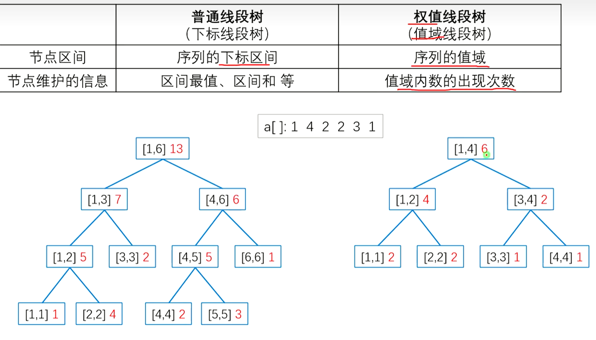

主席树¶
166 可持久化线段树（主席树）_哔哩哔哩_bilibili
主席树全称是可持久化权值线段树
注意：在某些程度上，主席树≠可持久化线段树
定义：权值线段树
线段树维护的是区间lr的最大值等，而值域线段树维护的是在区间1n中大小在[l,r]范围内的数的个数

定义：可持久化线段树

简单做法：暴力地每次修改都开一棵新的线段树

这是不可取的，因此我们有优化方法

注释：堆式存储法即父节点为i，子节点为\(2 \times i\) 和 \(2\times i+1\)的存储方法

动态开点解说：对于每个节点应该保存左右儿子的编号，对于每个历史版本，还应该保存根节点的编号。
解说：每一次修改一定会改动根节点，因此每一个历史版本的根节点都不同。也就是说根节点是每一个历史版本的入口
动态开点线段树¶
结构
struct node{
int lc,rc,v;
}tr[4*N];
建树

void build(int &x,int l,int r){
x=++idx;
if(l==r)return;
build(tr[x].lc,l,l+r>>1);
build(tr[x].rc,(l+r>>1)+1,r);
}
注意，如果最开始的状态就i是一棵空树，后面才慢慢把数字插入进来，那么就不需要写build
插入

void insert(int pre,int &now,int l,int r,int v){
now=++idx;//动态开点.新插入一个点 为了可以方便的用这个now更新上一个函数空间的tr[now].lc(或rc),我们就引用一下
tr[now]=tr[pre];//复制旧点的信息
tr[now].v++;//点权+1,因为插入的树在now的区间内
if(l==r)return;
int mid=l+r>>1;
if(v<=mid)insert(tr[pre].lc,tr[now].lc,l,mid,v);
else insert(tr[pre].rc,tr[now].rc,mid+1,r,v);
}
pre指的是上一个版本的点的编号，now指的是新的编号（会动态开点，传入的一个是空，然后在函数中会对其进行赋值）
如果要插入一个点，请写
insert(rt[i-1],rt[i],1,n,v);//rt记录第i个版本的根节点,v是要插入的值
查询

如图，假设我们在空树上插入了8个数，现在我要查询插入第6个数时的第5小的数。我们可以从rt[6]进入第6个版本的值域线段树，然后二分
二分方法：我们先到根节点，发现左子树在[1,2]有4个数，那么第5个数就在右子树。进入右子树，将目标5减去根节点左子树的大小4得1，然后看现在的左子树大小，为1，那么就进入左子树。继续二分下去直到l==r，此时l就是答案

扩展

query(int pre,int now,int l,int r,int k){//查询区间l~r中第k大的数
if(l==r)return l;
int mid=l+r>>1;
int s=tr[tr[now].lc].v-tr[tr[pre].lc].v;//note
if(k<=s)return query(tr[pre].lc,tr[now].lc,l,mid,k);
return query(tr[pre].rc,tr[now].rc,mid+1,r,k);
}
我们重点关注这一行代码
int s=tr[tr[now].lc].v-tr[tr[pre].lc].s;//note
为什么要这样呢？我们结合一个例子（导师の伟大样例）

我们查询下标3~6之间第4大的数（很明显是3对吧）

当我们函数走到根节点时，tr[tr[pre].lc].v代表了i=2时12值域内数字的个数，tr[tr[now].lc].v代表了i=6时12值域内的数字个数，将它们做差后，就得到了下标2+1=36范围内值域12的数的个数啦！（前缀和思想）

query(int pre,int now,int l,int r,int k){//查询区间l~r中第k大的数
if(l==r)return l;
int mid=l+r>>1;
int s=tr[tr[now].lc].v-tr[tr[pre].lc].v;//note
if(k<=s)return query(tr[pre].lc,tr[now].lc,l,mid,k);
return query(tr[pre].rc,tr[now].rc,mid+1,r,k-s);//注意是k-s,因为左子树已经有s个了,所以只要在右子树找第k-s个即可
}
注意
在值域线段树中，节点的[l,r]指的是数字大小在lr之间的数字的个数，除非使用主席树，否则维护的都是1n的区间，不能求出特点子区间的问题。
还有就是，一般题目中的值域可能较大，而数字数量不多，所以需要离散化

离散化的代码就不写了，贴贴~（想和Chargcy贴贴...）（bushi，贴图片

模板¶
如题，你需要维护这样的一个长度为 N 的数组，支持如下几种操作
-
在某个历史版本上修改某一个位置上的值
-
访问某个历史版本上的某一位置的值
见下方：可持久化线段树（数组）
这是个非常经典的可持久化权值线段树入门题——静态区间第 \(k\) 小。
数据已经过加强，请使用可持久化权值线段树。同时请注意常数优化。
如题，给定 \(n\) 个整数构成的序列 \(a\)，将对于指定的闭区间 \([l, r]\) 查询其区间内的第 \(k\) 小值。
对于每次询问，输出一行一个整数表示答案。
- 对于 \(100\%\) 的数据，满足 \(1 \leq n,m \leq 2\times 10^5\)，\(|a_i| \leq 10^9\)，\(1 \leq l \leq r \leq n\)，\(1 \leq k \leq r - l + 1\)。
/*
CB Ntsc
*/
#include <bits/stdc++.h>
using namespace std;
#define int long long
#define mp make_pair
const int N = 1e6 + 5;
const int INF = 1e9 + 5;
const int MOD = 1e9 + 7;
bool f1;
int top[N], fa[N], a[N], rt[N];
int q, n, m, ans, idx, T;
vector<int> b;
bool f2;
#define rd read()
inline int read() {
int xx = 0, ff = 1;
char ch = getchar();
while (ch < '0' || ch > '9') {
if (ch == '-')
ff = -1;
ch = getchar();
}
while (ch >= '0' && ch <= '9') xx = xx * 10 + (ch - '0'), ch = getchar();
return xx * ff;
}
inline void write(int out) {
if (out < 0)
putchar('-'), out = -out;
if (out > 9)
write(out / 10);
putchar(out % 10 + '0');
}
struct node{
int lc,rc,v;
}tr[4*N];
void build(int &x,int l,int r){
x=++idx;
if(l==r)return;
build(tr[x].lc,l,l+r>>1);
build(tr[x].rc,(l+r>>1)+1,r);
}
void insert(int pre,int &now,int l,int r,int v){
now=++idx;//动态开点.新插入一个点 为了可以方便的用这个now更新上一个函数空间的tr[now].lc(或rc),我们就引用一下
tr[now]=tr[pre];//复制旧点的信息
tr[now].v++;//点权+1,因为插入的树在now的区间内
if(l==r)return;
int mid=l+r>>1;
if(v<=mid)insert(tr[pre].lc,tr[now].lc,l,mid,v);
else insert(tr[pre].rc,tr[now].rc,mid+1,r,v);
}
int query(int pre,int now,int l,int r,int k){//查询区间l~r中第k大的数
if(l==r)return l;
int mid=l+r>>1;
int s=tr[tr[now].lc].v-tr[tr[pre].lc].v;//note
if(k<=s)return query(tr[pre].lc,tr[now].lc,l,mid,k);
return query(tr[pre].rc,tr[now].rc,mid+1,r,k-s);//注意是k-s,因为左子树已经有s个了,所以只要在右子树找第k-s个即可
}
signed main() {
// freopen("chfran.in", "r", stdin);
// freopen("chfran.out", "w", stdout);
n=rd;m=rd;
for(int i=1;i<=n;i++){
a[i]=rd;
b.push_back(a[i]);
}
sort(b.begin(),b.end());
b.erase(unique(b.begin(),b.end()),b.end());
int len=b.size();
build(rt[0],1,len);
for(int i=1;i<=n;i++){
int id=lower_bound(b.begin(),b.end(),a[i])-b.begin()+1;
insert(rt[i-1],rt[i],1,len,id);
}
while(m--){
int l=rd,r=rd,k=rd;
int id=query(rt[l-1],rt[r],1,len,k)-1;
printf("%lld\n",b[id]);
}
}
/*
1
2 5 1
0 0 1
0 0 4
*/
NOIP真题¶
题目描述
HH 有一串由贝壳组成的项链。
他提出了一个问题：某一段贝壳中，包含了多少种不同的贝壳？
输入格式
一行一个正整数 \(n\)，表示项链长度。 第二行 \(n\) 个正整数 \(a_i\)，表示项链中第 \(i\) 个贝壳的种类。
第三行一个整数 \(m\)，表示 HH 询问的个数。 接下来 \(m\) 行，每行两个整数 \(l,r\)，表示询问的区间。
输出格式
输出 \(m\) 行，每行一个整数，依次表示询问对应的答案。
【数据范围】
对于 \(20\%\) 的数据，\(1\le n,m\leq 5000\)； 对于 \(40\%\) 的数据，\(1\le n,m\leq 10^5\)； 对于 \(60\%\) 的数据，\(1\le n,m\leq 5\times 10^5\)； 对于 \(100\%\) 的数据，\(1\le n,m,a_i \leq 10^6\)，\(1\le l \le r \le n\)。
本题可能需要较快的读入方式，最大数据点读入数据约 20MB
区间二维信息统计 | 数颜色¶
从标准输入中读入数据。 输入第 1 行两个正整数 \(n\),\(m\)。
输入第 2 行 \(n\) 个正整数，第 \(i\) 个数表示第 \(i\) 只兔子的颜色 \(a_i\)。
输入接下来 \(m\) 行，每行为以下两种中的一种：
-
“\(1\ l_j\ r_j\ c_j\)” ：询问在区间 \([l_j,r_j]\) 里有多少只颜色为 \(c_j\) 的兔子；
-
“\(2\ x_j\)”： \(x_j\) 和 \(x_j+1\) 两只兔子交换了位置。
数据范围均为3e5
我们用vector+二分即可。vector[i]中记录颜色i的点的下标从小到大。每次在vector[\(c_j\)]中二分查找值在\([l_j,r_j]\)范围内的上下界即可。修改时二分定位到vector[\(col_{x}\)]和vector[\(col_{x+1}\)]的位置修改。
带修主席树¶
我们注意到如果把主席树按其根来代表，那么其实它是一个线性结构，且满足类似前缀和的性质。所以我们要修改，就需要修改一连串后缀的值。
于是我们把主席树的根挂在树状数组上，这样我们在修改时只需要修改\(\log n\)棵树即可。
Dynamic Rankings¶
给定一个含有 \(n\) 个数的序列 \(a_1,a_2 \dots a_n\)，需要支持两种操作：
-
Q l r k表示查询下标在区间 \([l,r]\) 中的第 \(k\) 小的数 -
C x y表示将 \(a_x\) 改为 \(y\)
对于 \(10\%\) 的数据，\(1\le n,m \le 100\)； 对于 \(20\%\) 的数据，\(1\le n,m \le 1000\)； 对于 \(50\%\) 的数据，\(1\le n,m \le 10^4\)； 对于 \(100\%\) 的数据，\(1\le n,m \le 10^5\)，\(1 \le l \le r \le n\)，\(1 \le k \le r-l+1\)，\(1\le x \le n\)，\(0 \le a_i,y \le 10^9\)。
请注意常数优化，但写法正常的整体二分和树套树都可以以大约 \(1000\text{ms}\) 每个点的时间通过。
树状数组/线段树套线段树¶
我们发现，主席树（或者说主席树在求区间k大值时）是满足前缀和性质的，即为了求出[l,r]中在某个值域内的数字的个数，我们用r版本的线段树信息减去l-1版本的线段树信息得到的。
现在考虑修改，若我们要修改位置x上的值，那么我们暴力的写法是要修改在[x,r]上的所有点。实际上就是修改一整个后缀。
这就像极了暴力修改区间每一个数字。于是为了优化这个流程，首先我们认识到原来的主席树的rt[]是线性结构，为了快捷的区间修改，我们相比应该使用树状结构。所以我们把rt[]构建为一颗线段树/树状数组，即我们把rt[]中的每一个位置放到线段树/树状数组上去。
那么现在根据rt[]的数据结构的改变，rt[]记录的信息也要做出改变。以树状数组为例：
-
rt_2记录的是加入了[1,2]的数字的权值线段树
-
rt_3记录的是加入了[3,3]的数字的权值线段树
-
rt_4记录的是加入了[1,4]的数字的权值线段树
-
rt_5记录的是加入了[5,5]的数字的权值线段树
-
...
现在，我们要在位置x上做修改，前面也说了其实就是修改后缀。倒过来，其实就是修改前缀。那么修改前缀简单啊！不就是树状数组嘛！所以要在位置x上做修改，我们就在树状数组上修改\log级别的rt[]即可，也就是说我们只需要修改\log棵线段树的信息了。时间复杂度减少为O(n\log^2 n)
查询时，依旧是R位置减去L-1位置，这时候不再是两棵线段树作差，而是log棵线段树与log棵线段树作差；跳的时候，log个节点一起跳到左子树/右子树
模板¶
/*
CB Ntsc111
*/
#include <bits/stdc++.h>
using namespace std;
#define ull unsigned int
#define pii pair<int, int>
#define pf to
#define ps second
#define int long long
#define err cerr << "Error"
#define rd read()
#define ot write
#define nl putchar('\n')
int read() {
int xx = 0, ff = 1;
char ch = getchar();
while (ch < '0' || ch > '9') {
if (ch == '-')
ff = -1;
ch = getchar();
}
while (ch >= '0' && ch <= '9')
xx = xx * 10 + (ch - '0'), ch = getchar();
return xx * ff;
}
void write(int out) {
if (out < 0)
putchar('-'), out = -out;
if (out > 9)
write(out / 10);
putchar(out % 10 + '0');
}
const int N = 10005;
struct segment_tree {
int v;
int ls, rs;
} t[N * 400]; // 线段树开n log n大小
struct operation {
bool b;
int l, r, k;
int pos, t;
} q[N]; // 离线
int n, m, a[N], o[N << 1], rt[N], len, tot, temp[2][20], cnt[2];
char opt;
void change(int &now, int l, int r, int pos, int val) {
if (!now)
now = ++tot;
t[now].v += val;
if (l == r)
return;
int mid = (l + r) >> 1;
if (pos <= mid)
change(t[now].ls, l, mid, pos, val);
else
change(t[now].rs, mid + 1, r, pos, val);
}
void Modify(int x, int val) {
int k = lower_bound(o + 1, o + len + 1, a[x]) - o;
for (int i = x; i <= n; i += i & -i)
change(rt[i], 1, len, k, val); // 处理出需要修改哪log棵主席树
}
int query(int l, int r, int k) {
if (l == r)
return l;
int mid = (l + r) >> 1, sum = 0;
for (int i = 1; i <= cnt[1]; i++)
sum += t[t[temp[1][i]].ls].v;
for (int i = 1; i <= cnt[0]; i++)
sum -= t[t[temp[0][i]].ls].v;
if (k <= sum) {
for (int i = 1; i <= cnt[1]; i++)
temp[1][i] = t[temp[1][i]].ls;
for (int i = 1; i <= cnt[0]; i++)
temp[0][i] = t[temp[0][i]].ls;
return query(l, mid, k);
} else {
for (int i = 1; i <= cnt[1]; i++)
temp[1][i] = t[temp[1][i]].rs;
for (int i = 1; i <= cnt[0]; i++)
temp[0][i] = t[temp[0][i]].rs;
return query(mid + 1, r, k - sum);
}
}
int Query(int l, int r, int k) {
memset(temp, 0, sizeof(temp));
cnt[0] = cnt[1] = 0;
for (int i = r; i; i -= i & -i)
temp[1][++cnt[1]] = rt[i];
for (int i = l - 1; i; i -= i & -i)
temp[0][++cnt[0]] = rt[i];
return query(1, len, k);
}
signed main() {
n = rd, m = rd;
for (int i = 1; i <= n; i++)
a[i] = rd, o[++len] = a[i];
for (int i = 1; i <= m; i++) {
cin >> opt;
q[i].b = (opt == 'Q');
if (q[i].b)
q[i].l = rd, q[i].r = rd, q[i].k = rd;
else
q[i].pos = rd, q[i].t = rd, o[++len] = q[i].t;
}
sort(o + 1, o + len + 1);
len = unique(o + 1, o + len + 1) - o - 1;
for (int i = 1; i <= n; i++)
Modify(i, 1);
for (int i = 1; i <= m; i++) {
if (q[i].b)
printf("%lld\n", o[Query(q[i].l, q[i].r, q[i].k)]);
else {
Modify(q[i].pos, -1);
a[q[i].pos] = q[i].t;
Modify(q[i].pos, 1);
}
}
return 0;
}